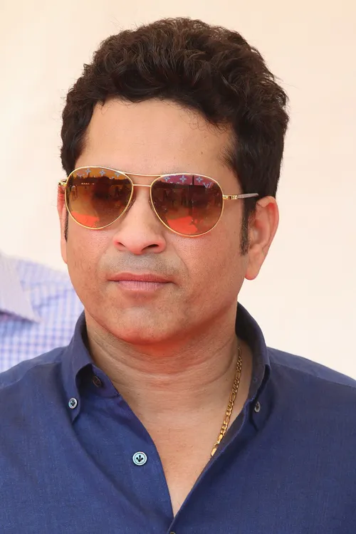
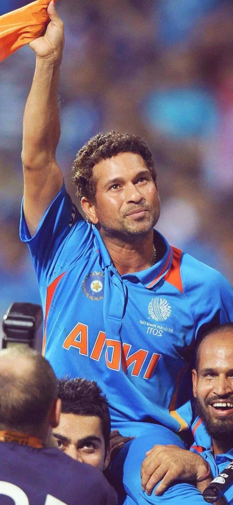

Sachin Ramesh Tendulkar is a former Indian international cricketer and a former captain of the Indian national team. He is widely regarded as one of the greatest batsmen in the history of cricket. Tendulkar is the highest run scorer of all time in International cricket. He is the only player to have scored one hundred international centuries, the first batsman to score a double century in a One Day International (ODI), and the holder of numerous other records, including the most runs in both Test and ODI cricket. In 2010, Tendulkar was voted as the "Greatest Sporting Moment of the Decade" in India, and he was also named one of the "100 Most Influential People in the World" by Time magazine in 2010. Tendulkar has received several awards from the government of India: the Arjuna Award (1994), the Khel Ratna Award (1997), the Padma Shri (1998), and the Padma Vibhushan (2008).[14][15] After Tendulkar played his last match in November 2013, the Prime Minister's Office announced the decision to award him the Bharat Ratna, India's highest civilian award.[16][17] He was the first sportsperson to receive the award and, as of 2024, is the youngest recipient.[18][19][20] Having retired from ODI cricket in 2012,[21][22] he retired from all forms of cricket in November 2013 after playing his 200th Test match.[23] Tendulkar played 664 international cricket matches in total, scoring 34,357 runs.[24] In 2013, Tendulkar was included in an all-time Test World XI to mark the 150th anniversary of Wisden Cricketers' Almanack, and he was one of only two specialist batsmen of the post–World War II era, along with Viv Richards, to get featured in the team.[25]Raj Singh Dungarpur is credited for the selection of Tendulkar for the Indian tour of Pakistan in late 1989,[69] after one first class season.[70] The Indian selection committee had shown interest in selecting Tendulkar for the tour of the West Indies held earlier that year, but eventually did not select him, as they did not want him to be exposed to the dominant fast bowlers of the West Indies so early in his career.[cita Tendulkar was the youngest player to debut for India in Tests at the age of 16 years and 205 days, he made his ODI debut for India at the age of 16 years and 238 days, playing against Pakistan in Jinnah Stadium, Gujranwala.[71][72] Tendulkar made his Test debut against Pakistan in Karachi in November 1989 aged 16 years and 205 days. He scored 15 runs, being bowled by Waqar Younis, who also made his debut in that match. He was noted for how he handled numerous blows to his body at the hands of the Pakistani pace attack.[73] In the fourth and final Test match in Sialkot, he was hit on the nose by a bouncer bowled by Younis, but he declined medical assistance and continued to bat even as he his nose gushed blood.[74] In a 20-over exhibition game in Peshawar, held in parallel with the bilateral series, Tendulkar made 53 runs off 18 balls, including an over in which he scored 27 runs bowled by leg-spinner Abdul Qadir.[75] This was later called "one of the best innings I have seen" by the then Indian captain Krishnamachari Srikkanth.[76] In all, Tendulkar scored 215 runs at an average of 35.83 in the Test series, and was dismissed without scoring a run in the only One Day International (ODI) he played.[77][78]
On 10 December 2005 at Feroz Shah Kotla, Tendulkar scored his record-breaking 35th Test century, against the Sri Lankans. After this, Tendulkar endured the longest[needs update] spell of his career without a Test century: 17 innings elapsed before he scored 101 against Bangladesh in May 2007.[168] Tendulkar scored his 39th ODI hundred on 6 February 2006 in a match against Pakistan.[169] He followed with a 42 in the second One-Day International against Pakistan on 11 February 2006,[170] and then a 95 in hostile, seaming conditions on 13 February 2006 in Lahore, which set up an Indian victory.[171] On 19 March 2006, after being dismissed for only one run against England in the first innings of the third Test in his home ground, Wankhede, Tendulkar was booed off the ground by a section of the crowd.[172] Tendulkar ended the three-Test series without a half-century to his credit, and the need for a shoulder operation raised more questions about his longevity.[ On the second day of the Nottingham Test on 28 July 2007, Tendulkar became the third cricketer to complete 11,000 Test runs.[186] In the subsequent one-day series against England, Tendulkar was the leading run scorer from India[187] with an average of 53.42. In the ODI Series against Australia in October 2007 Tendulkar was the leading Indian run scorer with 278 runs.[188] Tendulkar was dismissed five times in 2007 between 90 and 100, including three times at 99, leading some to suggestions that he struggles to cope with nervousness in this phase of his innings.[189] Tendulkar has got out 27 times in the 90s during his international career.[190] In a five-ODI series against Pakistan, he was caught by Kamran Akmal off the bowling of Umar Gul for 99 in the second match at Mohali,[191] and in the fourth match of that series, he got out in the 90s for a second time, scoring 97 before dragging a delivery from Gul on to his stumps.[192]

From February to April, Bangladesh, India, and Sri Lanka hosted the 2011 World Cup. Amassing 482 runs at an average of 53.55 including two centuries, Tendulkar was India's leading run-scorer for the tournament; only Tillakaratne Dilshan of Sri Lanka scored more runs,[270] and was named in the ICC "Team of the Tournament".[271] India defeated Sri Lanka in the final.[272] Shortly after the victory, Tendulkar commented that "Winning the World Cup is the proudest moment of my life. ... I couldn't control my tears of joy."[2 India were due to tour the West Indies in June, although Tendulkar chose not to participate. He returned to the squad in July for India's tour of England.[274] Throughout the tour there was much hype in the media about whether Tendulkar would reach his 100th century in international cricket (Test and ODIs combined). However, his highest score in the Tests was 91; Tendulkar averaged 34.12 in the series as England won 4–0 as they deposed India as the No. 1 ranked Test team.[275][276] The injury Tendulkar sustained to his right foot in 2001 flared up and as a result he was ruled out of the ODI series that followed.[275] Tendulkar created another record on 8 November 2011 when he became the first cricketer to score 15,000 runs in Test cricket, during the opening Test match against the West Indies at the Feroz Shah Kotla Stadium in New Delhi.[277][278] For his performances in 2011, he was named in the World Test XI by the ICC.[279]